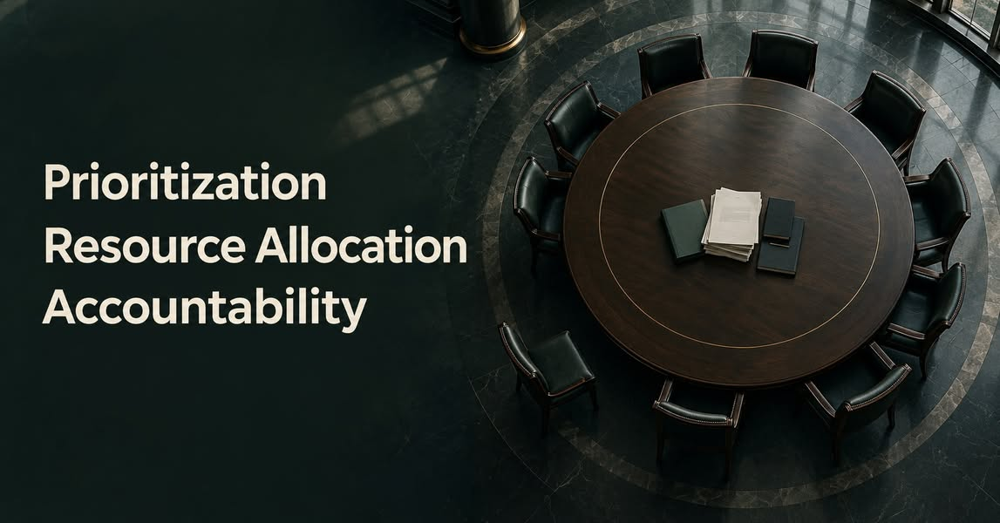

ลำดับความสำคัญ ทรัพยากร และความรับผิดชอบต่อศรัทธาในองค์กร
{kind=link}

ชีวิตของคนและองค์กรมีทรัพยากรจำกัด เราไม่อาจทำทุกอย่างพร้อมกันได้ จึงต้องจัดลำดับความสำคัญ แล้วนำเวลา คน และงบประมาณไปวางไว้กับเรื่องที่เลือก
แต่คำว่า prioritization ไม่ควรกลายเป็นข้ออ้างให้ผู้ตัดสินใจละเลยผลจากสิ่งที่เลือก เพราะการจัดลำดับความสำคัญและการจัดสรรทรัพยากรต้องเดินคู่กับ accountability เสมอ
องค์กรไปทางไหน ไม่ได้เกิดขึ้นโดยบังเอิญ
ทิศทางขององค์กรปรากฏอยู่ในสิ่งที่ผู้มีอำนาจเลือกทำ สิ่งที่ไม่ทำ เรื่องที่ได้งบประมาณ เรื่องที่ถูกเลื่อนออกไป คนที่ได้รับการรับฟัง และคนที่ถูกทำให้เงียบ การตัดสินใจเหล่านี้บอกลำดับคุณค่าขององค์กรได้ชัดกว่าถ้อยคำสวยงามในแผนยุทธศาสตร์
ผู้ตัดสินใจอาจบอกว่าตนทำได้เพียงเท่านี้ หรือทุกอย่างเป็นไปตามธรรมดาขององค์กร แต่ข้อจำกัดไม่ได้ลบความรับผิดชอบ เพราะแม้เราเลือกได้ไม่ทุกเรื่อง เราก็ยังต้องรับผิดชอบต่อสิ่งที่เลือกและผลที่ตามมา
เมื่อความถูกต้องถูกแบ่งเป็นพรรคเทพกับพรรคมาร
ปัญหาเริ่มหนักขึ้นเมื่อองค์กรปั้นคำสวย ๆ เพื่อวางตนไว้ฝ่ายธรรมะ แล้วชี้ว่าคนเห็นต่างอยู่ฝ่ายมาร เมื่อความเห็นต่างถูกทำให้เป็นปัญหาด้านคุณธรรม การตั้งคำถามก็ไม่ถูกตอบด้วยเหตุผลอีกต่อไป แต่ถูกตอบด้วยสถานะ ภาพลักษณ์ และอำนาจในการนิยามว่าใครเป็นคนดี
คนที่มั่นใจว่าตัวเองอยู่ฝ่ายธรรมะมักไม่รู้สึกว่าต้องรับผิดชอบต่อความเสียหายที่เกิดขึ้น เพราะเชื่อว่าเจตนาของตนดีอยู่แล้ว แต่เจตนาดีไม่ได้ทำให้ผลลัพธ์ที่บั่นทอนคนและองค์กรหายไป
คำว่า “เป็นธรรมดา” ไม่ใช่คำตอบ
เมื่อถูกถามถึงผลกระทบ การตอบเพียงว่า “เป็นธรรมดา” คือการทำให้สิ่งที่มนุษย์เลือกกลายเป็นปรากฏการณ์ที่ไม่มีผู้รับผิดชอบ ทั้งที่ความเสื่อมศรัทธาไม่ได้เกิดขึ้นเอง หากค่อย ๆ สะสมจากการตัดสินใจที่ไม่อธิบาย การใช้อำนาจที่ไม่รับฟัง และการปฏิเสธว่าความเสียหายนั้นมีอยู่จริง
ไม่ว่าจะเป็นนิยายกำลังภายใน ข่าวสถาบันศาสนา การเมือง หรือการบริหารองค์กร เรื่องราวมักกลับมาที่แก่นเดียวกัน: คนที่เชื่อว่าตนเป็นฝ่ายดี อาจไม่เคยสำรวจเลยว่าสิ่งที่ตนทำกำลังกัดกินความไว้วางใจของคนอื่นเพียงใด
ยุทธภพยังอยู่ได้ เพราะคนยังมีศรัทธา
องค์กรจำนวนมากยังไม่ล่มสลาย ไม่ใช่เพราะไม่เคยมีความผิดพลาด แต่เพราะยังมีคนเชื่อว่าสิ่งนั้นควรดีขึ้นได้ ยังมีคนพยายามประคับประคอง ตั้งคำถาม และรับผิดชอบแม้ไม่ได้เป็นผู้สร้างปัญหา
ศรัทธาจึงไม่ใช่ทรัพยากรที่ผู้มีอำนาจจะใช้ได้ไม่จำกัด และไม่ใช่หน้าที่ของคนข้างล่างที่จะต้องรักษาไว้ฝ่ายเดียว หากองค์กรยังต้องการความเชื่อมั่น การจัดลำดับความสำคัญและการจัดสรรทรัพยากรทุกครั้งต้องมาพร้อมคำถามว่า ใครรับผล และใครรับผิดชอบ